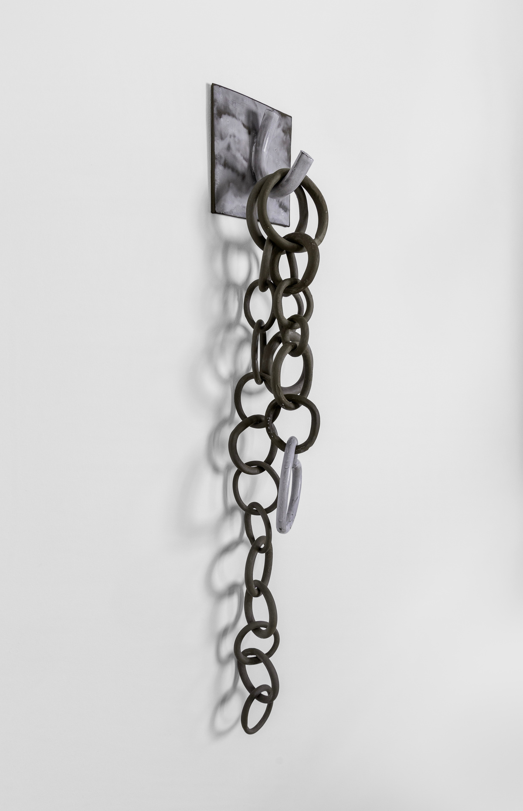
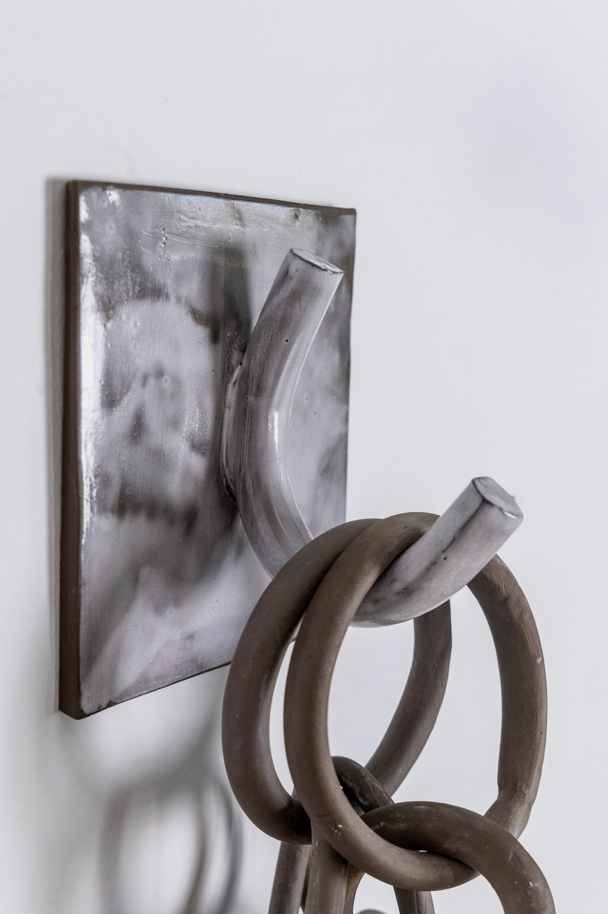
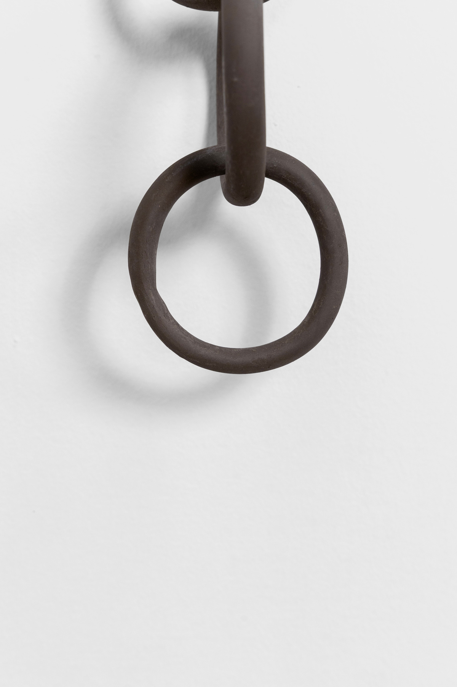
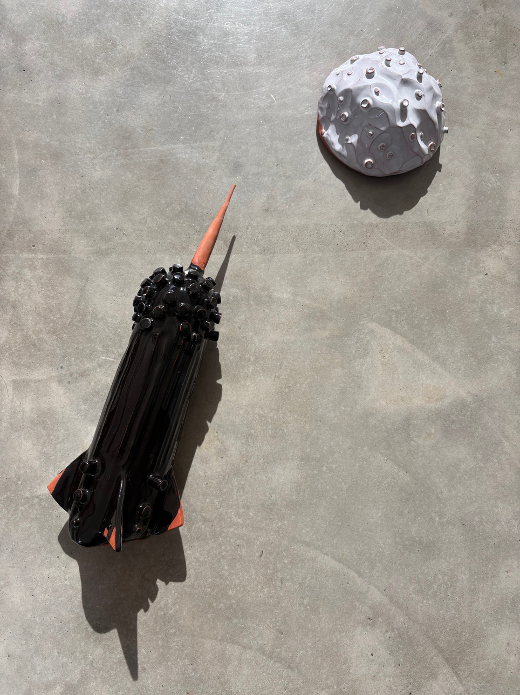
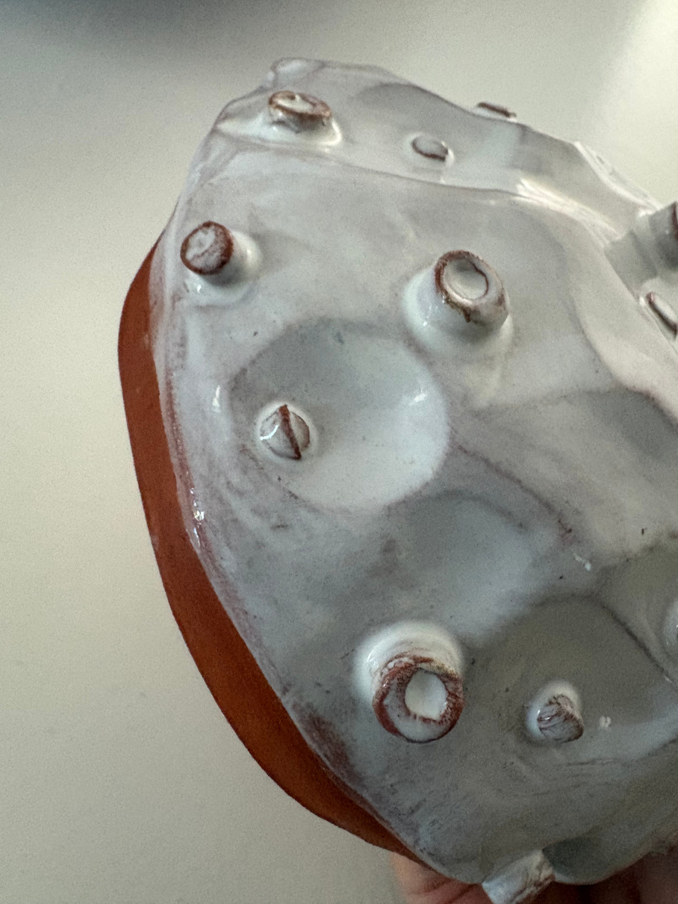
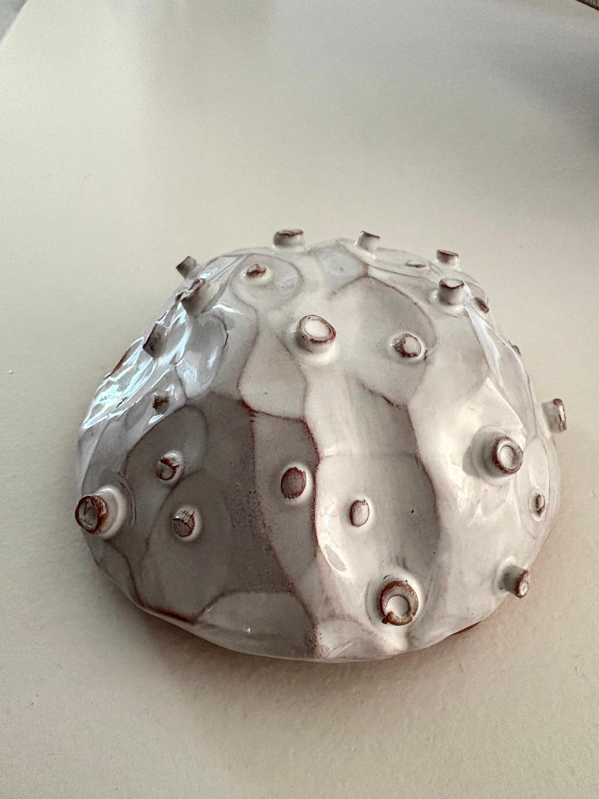
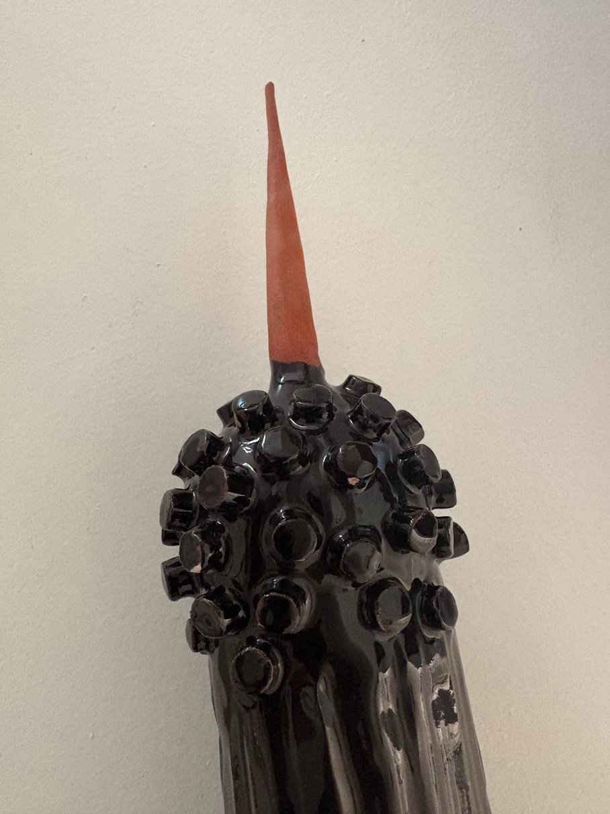

SOS
SOS è un’installazione ceramica che si
presenta come una catena verticale in cui la
ripetizione dei singoli anelli rappresenta la
continuità della vita, l’ordine naturale delle cose,
i legami biologici del regno animale. La linearità
si interrompe, un salto evolutivo: basta che un
singolo anello della catena si deformi, si
trasformi, per alterare la struttura e l’essenza
dell’intera catena. Questa mutazione singola,
banale e stereotipata, evidenziata dal contrasto
di colore e forma , simboleggia la nascita
dell’autocoscienza, del pensiero, dell’emotività.
La metamorfosi eleva, devia dall’istinto per
ridefinire il destino, un destino ambiguo in cui
l’animale si riscatta acquisendo la complessità
dell’uomo che, smarrito nella sua stessa
coscienza, si riscopre bestia.
· · · — — — · · ·

Concorso Premio Bottega Gollini
ANIMAL KINGDOM


L’ installazione esplora il concetto di - attraversamento -
come pulsione dell’uomo. L’essere umano non si
accontenta dell’esistente, egli ha un bisogno viscerale di
sperimentare, di varcare i propri confini: geografici,
mentali e spirituali. Si spinge fino a superare, o
quantomeno sfiorare, il limite tra il mondo conosciuto e
l’ignoto.
L’opera si compone di due elementi ceramici — la Luna
e il Razzo — restituiti attraverso forme semplici e
stereotipate che evocano l’immaginario poetico
dell’infanzia e del fumetto.
To the moon and back
La Luna: una piccola semisfera craterica, una superficie
materica che si fa rappresentazione visiva dell’ignoto,
inteso come soglia etica e poetica dell’esplorazione.


Il Razzo: un guscio protettivo che l'uomo porta con sé
durante la traversata. In esso risiede la consapevolezza di
non voler smarrire la propria origine: la spinta verso l'ignoto
si compie solo se accompagnata dalla promessa — o dalla
possibilità — di un ritorno verso ciò che è familiare.
Lo spazio vuoto che separa il razzo dalla luna non è
semplice assenza ma, una zona di viva tensione: un luogo
di attrito simbolico in cui l’eco della domanda - chi saremo
una volta oltrepassata la soglia? - si propaga come
un'onda supersonica.
